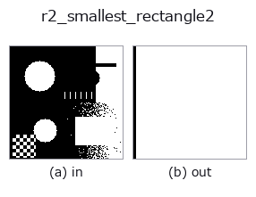

region op• Datenarten: region → region
• Aufruf: fullseye.apply(img, "r2_smallest_rectangle2", a=0.5, b=0.5) (das 2-D-Modell ist ein Bild plus zwei skalare Regler a,b∈[0,1])
• HALCON-Äquivalent: smallest_rectangle2 (Bedeutung und Parameter sind in der HALCON-Referenz nachzulesen)

*Die Abbildung ist die tatsächliche Ausgabe auf einer synthetischen 128×128-Eingabe. Links Eingabe, rechts Ausgabe. Punktwolken als Draufsicht-Streudiagramm (Helligkeit = z), 1-D-Reihen als Linie, Volumen als Maximum-Projektion entlang z, Videos als mittleres Bild, komplexe Bilder als Betrag; Rückgabewerte, die kein Bild ergeben, werden als Werte gezeigt.*
*Regler a ändert die Ausgabe nicht (gemessen: identisch bei 0,1 / 0,5 / 0,9).*
*Regler b ändert die Ausgabe nicht (gemessen: identisch bei 0,1 / 0,5 / 0,9).*
Stufen (die vorangehenden Ops → dieser Op, von links nach rechts):
▸ r2_smallest_rectangle2: Stufen (Doku-Website)
Auf anderen Bildern (synthetische Szene / Foto / Münzen. Obere Reihe: Eingaben, untere Reihe: deren Ausgaben. Regler auf Standard):
▸ r2_smallest_rectangle2: andere Eingaben (Doku-Website)
Flächenminimales orientiertes umschließendes Rechteck als Maske (Rotating Calipers).
Zeichnet als Maske das gedrehte Rechteck minimaler Fläche, das alle Vordergrundpixel der Region enthält. Es bildet die konvexe Hülle der Vordergrundkoordinaten, konstruiert für jede Hüllenkante ein dazu parallel ausgerichtetes umschließendes Rechteck und wählt das mit der kleinsten Fläche (rotating calipers; genutzt wird die Eigenschaft, dass ein flächenminimales Rechteck an einer der Hüllenkanten anliegt). Die interne Darstellung ist Mittelpunkt (cy, cx), lange Seite long_len, kurze Seite short_len und Richtung der langen Seite angle (in Bogenmaß, gemessen in Bildkoordinaten x=col, y=row).
a streckt nur die lange Seite um den Faktor 1 + 0.3*a (a=0 ergibt das minimale Rechteck selbst, a=1 eine 1.3-fach lange Seite; die kurze Seite bleibt unverändert). b wird nicht verwendet. Gezeichnet wird über die Projektionen vom Mittelpunkt |pu| <= long/2 + 0.5, |pv| <= short/2 + 0.5; für die Ausdehnung eines Pixels wird ein Rand von 0.5 Pixel addiert, daher enthält die Ausgabe stets die Eingaberegion.
Der Rückgabewert ist eine float64-0/1-Maske gleicher Form wie die Eingabe, ohne Vordergrund nur Nullen. Zahlenwerte für Winkel und Seitenlängen werden nicht zurückgegeben. Bei mehreren Zusammenhangskomponenten entsteht insgesamt 1 Rechteck. Ist der Vordergrund 1 Pixel oder liegt er auf einer Geraden, entartet das Rechteck (Punkt/Strecke), und die Zeichnung wird zu einem schmalen Band von etwa 1 Pixel Breite. Genügt achsenparallel, ist r2_smallest_rectangle1 leichtgewichtiger. Für die Vorverarbeitung zur Bestimmung der Orientierung länglicher Bauteile oder um die Rechteckigkeit über das Flächenverhältnis zu r2_inner_rectangle1 zu beurteilen.
Randbehandlung: alles außerhalb des Bildes als Hintergrund (0) behandeln (gemessen; tools/impl2/border_probe.py).
• Leitfaden zur Familie gallery2d_region
• Katalog der Beispieldaten (Download-URLs / Lizenzen) — 2-D nutzt skimage.data (BSD/Public Domain) plus synthetische Bilder, 3-D nennt Download-URLs echter Datenquellen (Stanford, PDS, …).
• Herkunft und Literatur der Operatoren — die Quellen der Forschung/Verfahren, auf denen diese Operatorfamilie beruht.
• Der kanonische Algorithmus (Autor, Jahr) und seine Anwendungen stehen im Familienleitfaden oben.
Das Programm unten ist nachweislich lauffähig (gleiche Eingabe wie die Abbildung). In der Studio-Hilfe wird dieser Block zu Schaltflächen, die es sofort laden und ausführen.
threshold 0.50 0.50 r2_smallest_rectangle2 0.50 0.50
▸ Diese Pipeline laden · Laden & ausführen
• gallery2d_region — py -3.11 examples/gallery2d_region.py
region als Eingabe)identity · reg_erode · reg_dilate · reg_open · reg_close · fill_holes · select_largest · remove_small
region)reg_erode · reg_dilate · reg_open · reg_close · fill_holes · select_largest · remove_small · invert_region
*Provenance: ops.py — 2D Operator-Registry. Diese Notiz wird von tools/opdocs.py md erzeugt (nicht von Hand bearbeiten).*
© 2026 Kazufumi Furuse — Fullseye operator documentation. Licensed under Apache-2.0.